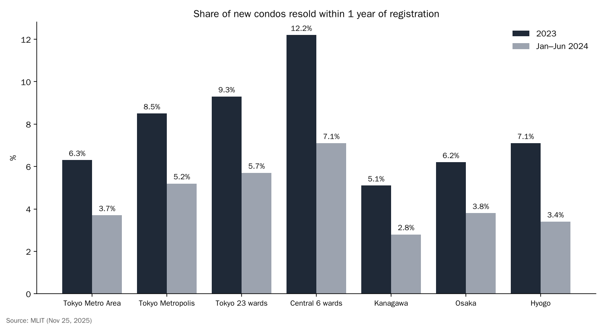
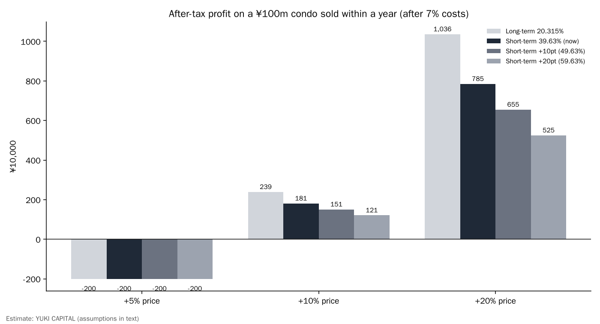

If Japan Taxes Quick Condo Flips More Heavily, What Happens to Prices and to Buy-Renovate-Resell Firms? An Estimate from Land Registry Data and Tax Rates
Buying a new condominium in central Tokyo and selling it within a year has become more common, especially in Tokyo. According to Japan's Ministry of Land, Infrastructure, Transport and Tourism (MLIT), 12.2% of new units in Tokyo's six central wards were resold within one year of first registration in 2023 [1].
For the fiscal 2027 tax reform, the ministry has requested measures to curb such speculative trades, and the ruling coalition's tax reform outline states that tax measures on short-term sales of new condominiums will be taken [2][3].
This article asks: if short-term resales are taxed more heavily, how much would that affect the economics of flipping, prices, and companies that buy, renovate and resell homes?
- Even today, an individual who sells within five years pays 39.63% on the gain. Selling a ¥100 million unit 10% higher leaves only about ¥1.81 million after tax and 7% in costs [4].
- Raising the rate by 10–20 points cuts that to ¥1.51–1.21 million. If the price rises by less than the 7% in costs, the trade loses money at any tax rate.
- Buy-renovate-resell firms are taxed on business income, so raising the individual capital-gains rate does not hit them directly. What matters for them is whether the property-acquisition-tax and registration-tax relief, which expires at the end of March 2027, is extended [5][6].

The question and background
Here, a "short-term sale" means ownership of a new condominium passing to someone else within one year of its first registration (the initial recording of the owner of a new building). MLIT used registry data from the Ministry of Justice and private price data to study about 550,000 new units in Japan's three largest metropolitan areas and four regional cities [1].
"Buy-renovate-resell" refers to licensed real-estate dealers buying used homes, renovating them and selling them to individuals. If certain renovations are made, there is relief on the dealer's property-acquisition tax and on the buyer's registration and license tax [5][6].
A "capital gain" on property here means the profit from selling land or a building after deducting the purchase price and selling costs. When an individual sells a unit other than their own home, this gain is taxed separately from other income. "Tax rate" in this article means the rate of that separate tax.
The question matters now because the tax debate has become concrete. MLIT included "necessary measures to respond to soaring new condominium prices" in its fiscal 2027 tax reform request and said it would study ways to curb speculative trades not based on real demand [2]. Kyodo News reported that heavier taxes on short-term sales are expected [7].
The current system already distinguishes short and long holding periods. So the real question is not whether to tax, but how many points heavier the rate must be to stop which trades. This article checks that difference with numbers.
Data and method
The figures used are the short-term sale shares by region, year and building size from the MLIT study [1], and the individual capital-gains tax rates published by the National Tax Agency [4]. If the holding period as of January 1 of the year of sale is five years or less, the gain is short-term and taxed at a combined 39.63% (income tax, special reconstruction income tax and resident tax). Above five years it is long-term and taxed at 20.315%.
Note how the holding period is counted. Because it is measured as of January 1 of the year of sale, a unit bought in March 2026 qualifies for the long-term rate only if sold in 2032 or later. In practice the owner must hold it for about five years and ten months, so the short-term rate applies for longer than many people assume.
The economics of flipping were estimated for a ¥100 million unit sold within a year. The formula is: after-tax profit = (sale price − purchase price − costs) × (1 − tax rate). Costs, including brokerage, registration and loan fees, were set at 7% of the purchase price. Price rises of 5%, 10% and 20% were tested, and in addition to the current 39.63%, hypothetical rates of 49.63% (+10 points) and 59.63% (+20 points) were assumed.
For comparison, the long-term rate of 20.315% that applies after more than five years is also shown. The size of any increase is hypothetical, as the government has not yet given a figure.
Results

The share of short-term sales was high in 2023 and fell in January–June 2024. Note that the 2024 figure covers only half a year and may have risen again later in the year. In Tokyo's 23 wards it fell from 9.3% to 5.7%, and in the six central wards from 12.2% to 7.1% [1]. The maximum in the central six wards in 2018–2022 was 4.6%, which shows how sharp the 2023 jump was.
Building size also mattered. For units of 40 square meters or more in the 23 wards, the short-term share in the first half of 2024 was 9.9% in large condominiums (100 or more registered sales per building) and 3.3% in others [1]. Flipping is concentrated in big projects.
Purchases by people living overseas were 7.5% in the central six wards in 2024 and 3.2% in January–June 2025 [1]. Overseas buyers are not the main story in the overall numbers.
Compared with the 2018–2022 peak, the 2023 share rose most in the central six wards (4.6%→12.2%) and Hyogo Prefecture (4.1%→7.1%) [1]. The pattern of more flipping closer to the center and in bigger buildings fits the view that flips gather where prices rise most.
Sensitivity analysis

| Price rise | Long-term 20.315% | Short-term 39.63% (now) | Short-term 49.63% | Short-term 59.63% |
|---|---|---|---|---|
| 5% | −¥2.00m | −¥2.00m | −¥2.00m | −¥2.00m |
| 10% | ¥2.39m | ¥1.81m | ¥1.51m | ¥1.21m |
| 20% | ¥10.36m | ¥7.85m | ¥6.55m | ¥5.25m |
With a 10% rise, the after-tax profit at today's rate is about ¥1.81 million, only about 1.8% of the ¥100 million outlay. Raising the rate by 20 points cuts it to ¥1.21 million. When the rise is a large 20%, the rate difference matters a lot in money terms (from ¥7.85 million to ¥5.25 million).
If the price rise does not reach the 7% in costs, the trade loses money at any rate. In other words, what has supported quick flips is not a low tax rate but price moves of more than 10% in a year.
The gap between short and long term is also worth noting. With a 20% rise, the difference between the current short-term 39.63% and the long-term 20.315% alone is ¥2.51 million. A 20-point increase widens it to ¥5.11 million. That strengthens the incentive to hold for the long-term rate, which also means fewer units come up for sale.
Changing the assumptions changes the results. Lowering costs to 5% increases the profit, while setting costs at 10% including loan interest leaves almost nothing after a 10% rise at any rate. Please read these numbers as one estimate with explicit assumptions.

Discussion
First, a heavier tax thins out flips in periods of large price rises. In periods of small rises, flipping is already marginal at today's rate. The fall in the share in 2024 in the MLIT data may reflect rising interest rates and slower price growth taking effect first.
Second, raising the individual capital-gains rate does not directly hit buy-renovate-resell firms. They sell homes they buy as inventory, and that profit is taxed as business income through corporate tax and similar. What affects them is whether the property-acquisition-tax and registration-tax relief is extended beyond its March 2027 deadline [5][6].
There is an opposing view. Taxing short-term flips will not lower prices unless the supply of new homes increases. There are also ways to restrain flips through contracts rather than taxes, such as Chiyoda Ward's request to the Real Estate Companies Association of Japan for a clause banning resale for five years after handover [8].
Third, how companies are treated could become a loophole. Gains on property held by a company are taxed as corporate income regardless of the holding period, so raising only the individual short-term rate could shift flipping from individuals to companies. Whether the outline includes companies will decide how much the measure bites.
Fourth, the effect on the used market. If short-term flips of new units decrease, units that used to leave the new market as flips will stop appearing in the used market. If used supply thins, used prices may become harder to fall. For buy-renovate-resell firms, both the number and price of homes they can buy would be affected.
The data have limits. Because MLIT's figures are based on registrations, flips done by a company buying a unit and then selling the company's shares are not counted. The test is how the ruling coalition's December tax reform outline defines three points: the target (new units only or also used), the period (one year or five), and whether companies are included.
Conclusion
A heavier tax on short-term flips cuts after-tax profit by 20–30% in periods of large price rises. But in periods of small rises, flipping is already marginal at today's rate, and interest rates and supply likely move prices more than taxes do. What affects buy-renovate-resell firms is not the tax rate but the fate of the relief measures that expire at the end of March 2027.
How I see it
I live in Japan, and I support Chiyoda Ward's resale ban. I think housing in central Tokyo has become a pure money game. Buying land or buildings that rose in price because of their name, with borrowed money, produces nothing except waiting for a resale gain.
As interest rates rise, I expect selling by people who bought with debt to appear first in used condominiums and tower condominiums, and later in large office and commercial buildings. So I am not looking at real-estate stocks as a buyer right now; I think they will fall further. On the other hand, I think J-REITs may be oversold, and I am keeping an eye on them.
Sources
- MLIT, "Results of a survey of new condominium transactions using real estate registry information," 2025-11-25 https://www.mlit.go.jp/report/press/content/001970012.pdf
- MLIT, "Fiscal 2027 tax reform request: necessary measures to respond to soaring new condominium prices," 2026-08 https://www.mof.go.jp/tax_policy/tax_reform/outline/fy2027/request/mlit/09y_mlit_k_16.pdf
- Liberal Democratic Party and Japan Innovation Party, "Fiscal 2026 Tax Reform Outline," 2025-12-19 https://storage2.jimin.jp/pdf/news/policy/212129_1.pdf
- National Tax Agency, "No.1440 Capital gains (when land or buildings are transferred)" https://www.nta.go.jp/taxes/shiraberu/taxanswer/joto/1440.htm
- MLIT, "Policy evaluation of special tax measures (registration tax relief for buy-renovate-resell homes)" https://www.mlit.go.jp/page/content/002012055.pdf
- Gunma Prefecture, "Property acquisition tax relief for homes handled by buy-renovate-resell dealers," 2026-04-01 https://www.pref.gunma.jp/site/tax/5306.html
- Kyodo News (via OANDA Securities), "Tax request over soaring condo prices," 2026-08-25 https://www.oanda.jp/lab-education/market_news/kn_2026082501001454/
- Moneyizm, "Hearing from Chiyoda Ward and others ahead of year-end tax debate," 2026-10 https://www.all-senmonka.jp/moneyizm/?p=316476
Photos: Unsplash. Charts by YUKI CAPITAL
I record my daily numbers and decisions on X.